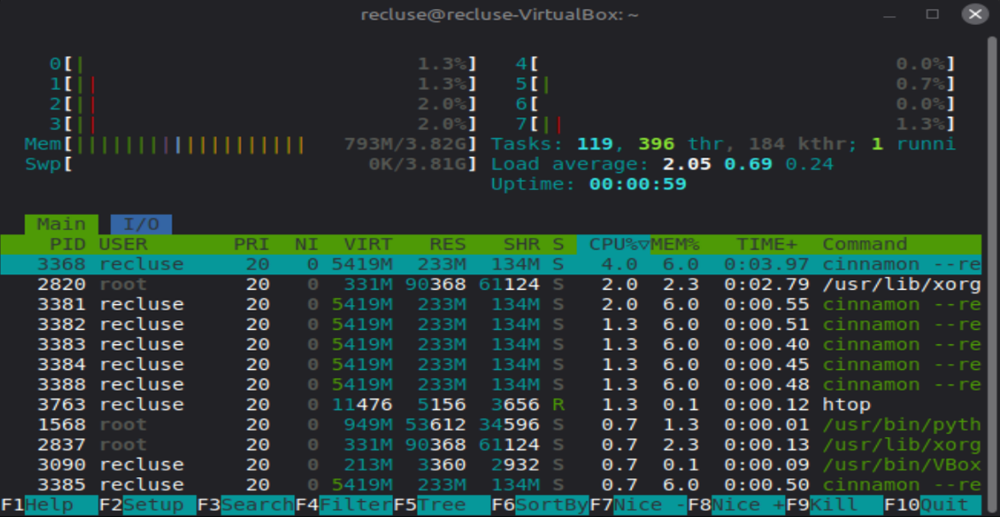
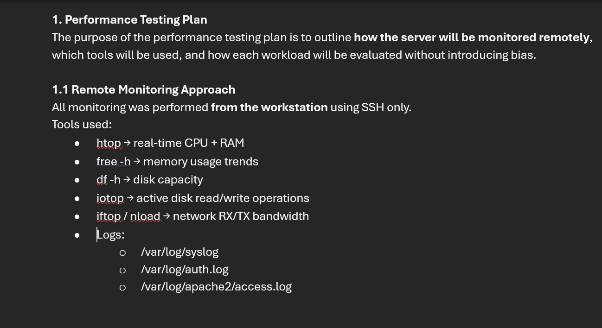
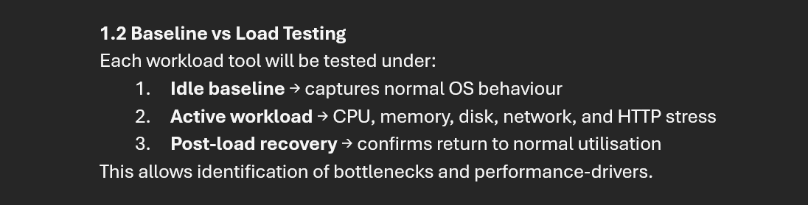
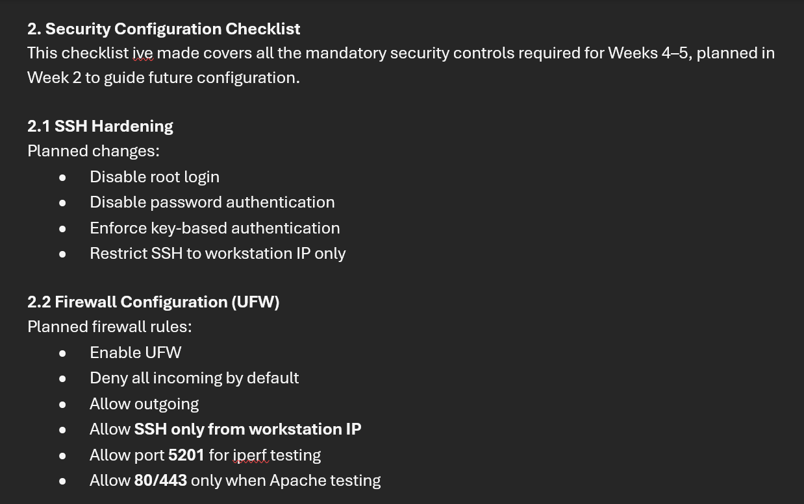
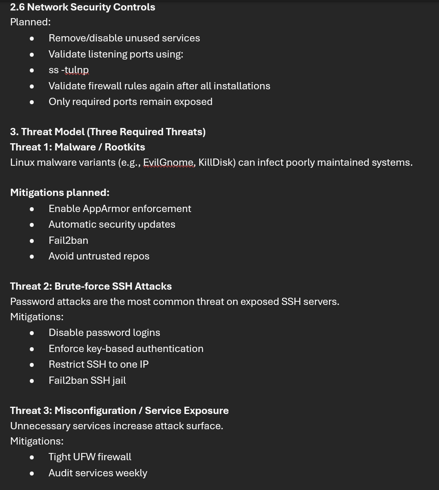

Week 2 focused on planning the approach before implementing security controls and performance testing.
I defined a performance testing plan (baseline vs load vs recovery, measured remotely over SSH),
created a security configuration checklist to guide Weeks 4–5 (SSH hardening, firewall rules, AppArmor,
updates, user privileges, and network controls), and produced a threat model covering three threats:
malware/rootkits, brute-force SSH attacks, and misconfiguration/service exposure. The planning artefacts
and monitoring evidence are provided below as screenshots.
Evidence Screenshots

Monitoring tool example (htop) supporting the planned remote monitoring approach.

Security configuration checklist (part 1): introduction, SSH hardening, and start of UFW planning.

Security configuration checklist (part 2): AppArmor planning and automatic updates.

Security configuration checklist (part 3): user privilege management and related controls.Security configuration checklist (part 4): network security controls, followed by the start of the threat model.

Threat model: three required threats and planned mitigations.